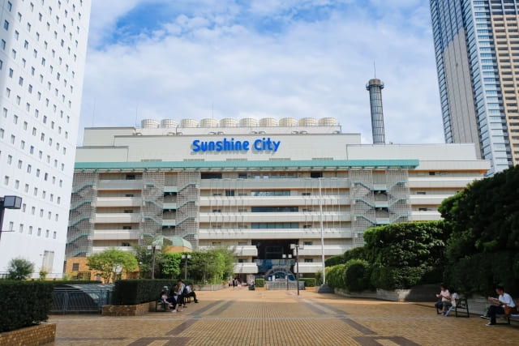

旅の目次
脱出ゲーム
雑居ビルの一角で外見はいたってシンプルですが、中は世界観がしっかり作りこまれていて、のめりこんで楽しめると話題！チームのみんなと協力して脱出成功を目指しましょう！
サンシャイン水族館
空を飛ぶように見えるペンギンの水槽や暗闇で泳ぐクラゲのコーナーなど都会のオアシスとも呼ばれるほどの設備で時間いっぱい飽きることなく楽しめます！
フード
みなさんも馴染み深いマクドナルドなどのチェーン店から、設立60年の無敵家などの老舗なお店まで幅広く備わっています！
周辺スポット
今回みなさんが行くサンシャイン水族館はもちろん、食品や専門店も充実した大型デパートや、高さ約8メートルの富士塚がある浅間神社など、多くの観光スポットがあります。自由時間などに是非行ってみてください！
制作 2022年校外学習実行委員会 サイトしおりフード班